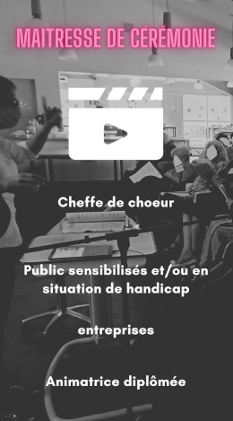
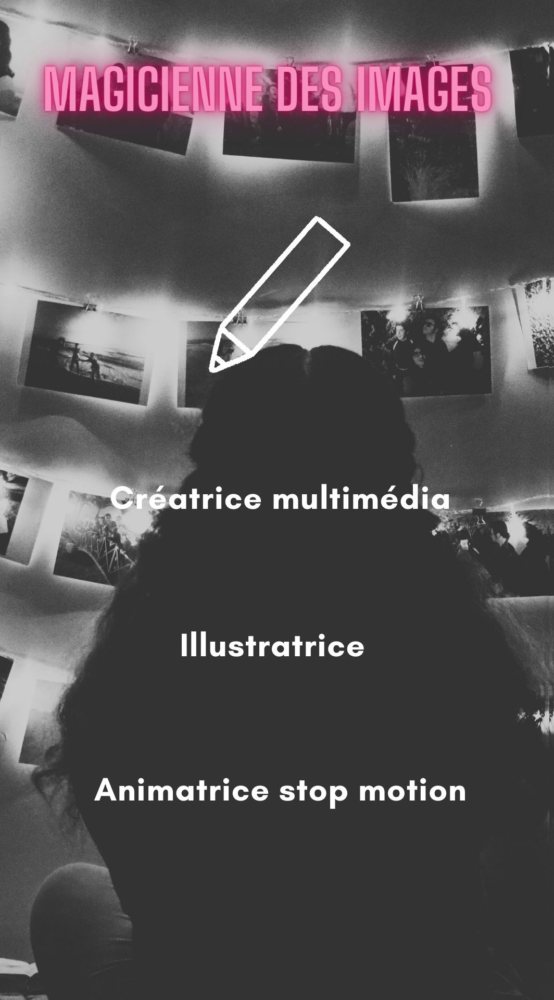

A propos de Nathalie
Depuis mon plus jeune âge, j'ai baigné dans l'univers artistique. Le chant et la musique ont toujours été une passion pour moi. Comme l'a dit Tim Burton, toute personne ayant des ambitions artistiques essaie toujours de se reconnecter avec la façon dont elle voyait les choses étant enfant. Et c'est exactement ce que j'ai fait. À huit ans, je me déguisais et chantais. Les progrès technologiques ont permis l'introduction du multimédia dans ma vie artistique, mais cela n'est qu'un outil pour améliorer le rendu.
Alors qui de Nathalie la Tsarina du rire, Nathalie la Jacasse, Nathalie la conteuse de l'Avent, Nathalie la Craintive, Nathalie raconte le Monde, Nathalie la gardienne du Printemps, Nathalie ouverte d'esprit, Nathalie de la Romance et Nathalie libre comme l'air, est la plus proche de la vraie ? Peut être que tout simplement un petit bout de la véritable Nathalie se trouve en chacune d’elles.
Je suis une animatrice passionnée et polyvalente, dotée de multiples talents artistiques faisant de moi une âme créative, éprise de liberté et de poésie. Mon univers artistique est vaste et varié, allant du dessin à la musique en passant par l'animation et le coaching vocal. Je suis une artiste qui s'exprime à travers les lignes et les ombres du crayonné, fascinée par la manière dont les différentes textures du papier peuvent ajouter de la profondeur et de la dimension à mes dessins.
Au fil de mon parcours, j'ai su m'enrichir de chaque expérience, cultivant ma sensibilité et développant ma créativité pour la mettre au service de ma passion pour l'animation. En tant qu'animatrice, je possède de nombreuses qualités qui me permettent de créer des spectacles vivants, des ateliers artistiques et des événements multimédias qui stimulent l'imagination des spectateurs. La créativité est ma marque de fabrique.
Je suis également une conteuse d'histoires, capable d'immerger le public dans des univers variés et fascinants. En explorant des thèmes riches et diversifiés, je stimule l'imagination et l'expression de mes auditeurs, les invitant à partager leurs propres histoires et expériences de vie. Mon objectif est de créer un espace où le public peut s'exprimer librement et partager ses émotions et ses idées. Mes spectacles sont conçus pour stimuler l'imagination, encourager la participation et offrir une expérience unique et inoubliable. Je suis convaincue que chacun a une histoire à raconter et que l'art peut être un moyen puissant de la partager.
Ainsi, en vous invitant à découvrir mes différents personnages, je souhaite vous emmener dans un voyage artistique où vous pourrez vous reconnecter avec votre imagination et vos émotions. Mon rôle est de vous accompagner dans cette expérience et de créer un espace où vous pourrez vous exprimer librement et partager vos idées.
Ma sensibilité me permet d'être à l'écoute des émotions et des besoins du public, de m'adapter à différents types de publics et à des contextes variés, en modulant mon langage, mon ton et ma posture en fonction des circonstances. Je suis également empathique et capable de me mettre à la place des spectateurs pour comprendre leurs attentes et leurs préoccupations.
En tant que coach vocal, j'ai su transmettre des connaissances et des valeurs de manière ludique et interactive, en favorisant la participation et l'expression des participants. La rigueur est également une qualité que je possède, car je suis soucieuse de la qualité artistique de mes spectacles. Je prends le temps de répéter et de peaufiner chaque détail pour offrir une prestation professionnelle.
En résumé, je suis une âme artistique en quête de sens et de beauté, prête à relever tous les défis pour offrir le meilleur de son talent. Mon profil est celui d'une animatrice passionnée, sensible, pédagogue, rigoureuse et flexible, qui saura vous emmener dans un univers unique et poétique pour partager des moments inoubliables.